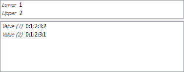

|
Open CASCADE Technology
7.2.0
|
|
|
Open CASCADE Technology
7.2.0
|
|
This manual explains how to use Inspector.
Inspector is a Qt-based library that provides functionality to interactively inspect low-level content of the OCAF data model, OCCT viewer and Modelisation Data. This component is aimed to assist the developers of OCCT-based applications to debug the problematic situations that occur in their applications.
Inspector has a plugin-oriented architecture. The current release contains the following plugins:
| Plugin | OCCT component | |
|---|---|---|
| DFBrowser | OCAF | TDocStd_Application |
| VInspector | Visualization | AIS_InteractiveContext |
| ShapeView | Modelisation Data | TopoDS_Shape |
Each plugin implements logic of a corresponding OCCT component.
Each of the listed plugins is embeded in the common framework. The user is able to manage which plugins should be loaded by Inspector. Also he can extend number of plugins by implementing a new plugin.
There are two launch modes:
Note. If you have no Inspector library in your build directory, please make sure that OCCT is compiled with BUILD_Inspector option ON. For more details see Build procedure.
Inspector consists of the following components:
This plugin visualizes content of TDocStd_Application in a tree view. It shows documents of the application, hierarchy of TDF_Labels, content of TDF_Attributes and interconnection between attributes (e.g. references). Additionally it has 3D view to visualize TopoDS_Shape elements stored in the document.
OCAF tree view
Each OCAF element has own tree view item:
| Type | Tree item | Text | Descript |
|---|---|---|---|
| TDocStd_Application | Application | TDocStd_Application | It is the root of tree view. Children are documents. |
| TDocStd_Document | Document | entry : name | It is a child of Application item. Children are Labels and Attributes items. Text view is an entry of the root label and the value of TDataStd_Name attribute for the label if it exists. |
| TDF_Label | Label | entry : name | It is a child of a Document or another Label item. Children and text view are the same as for Document item. |
| TDF_Attribute | Attribute | attribute type [additional information] | It is a child of a Label. It has no children. Text view is the attribute type (DynamicType()->Name() of TDF_Attribute) and additional information (a combination of attribute values) |
Additional information of TDF_Attributes:
| Type | Text |
|---|---|
| TDocStd_Owner | [storage format] |
| TDataStd_AsciiString, TDataStd_Name, TDataStd_Real, other Simple types | [value] |
| TDataStd_BooleanList, TDataStd_ExtStringList, other List types | [value_1 ... value_n] |
| TDataStd_BooleanArray, TDataStd_ByteArray, other Array types | [value_1 ... value_n] |
| TDataStd_TreeNode | [tree node ID ==> Father()->Label()] (if it has father) or [tree node ID <== First()->Label()] (if it has NO father) |
| TDataStd_TreeNode(XDE) | [XDE tree node ID ==> Father()->Label()] (if it has father), [XDE tree Node ID <== label_1, ..., label_n] (if it has NO father) |
| TNaming_NamedShape | [shape type : evolution] |
| TNaming_UsedShapes | [map extent] |
Custom color of items:
| OCAF element Typ | |
|---|---|
| TDF_Label | dark green, if the label has TDataStd_Name attribute, light grey if the label is empty (has no attributes on all levels of hierarchy), black otherwise |
| TNaming_NamedShape | dark gray for TopAbs_FORWARD orientation of TopoDS_Shape, gray for TopAbs_REVERSED orientation of TopoDS_Shape, black for other orientation |
Context popup menu:
| Action | Functio |
|---|---|
| Expand | Expands the next two levels under the selected item |
| Expand All | Expands the whole tree of the selected item |
| Collapse All | Collapses the whole tree of the selected item |
Property Panel
Property panel is used to display content of Label or Attribute tree view items. This control is used for content of Label or Attribute tree view items or Search result view. Information is usually shown in one or several tables.
TDF_Attribute has the following content in Property Panel:
| Type | Description | Content |
|---|---|---|
| TDF_Label | a table of [entry or attribute name, value] | 
|
| TDocStd_Owner, Simple types, List types | a table of [method name, value] | |
| TDataStd_BooleanArray, TDataStd_ByteArray, other Array types | 2 controls: * a table of [array bound, value], * table of [method name, value] |

|
| TDataStd_TreeNode | 2 controls: * a table of [Tree ID, value] (visible only if Tree ID() != ID()), * a tree view of tree nodes starting from Root() of the tree node. The current tree node has dark blue text. | 
|
| TDataStd_NamedData | tab bar of attribute elements, each tab has a table of [name, value] | 
|
| TNaming_UsedShapes | a table of all the shapes handled by the framework | 
|
| TNaming_NamedShape | 2 controls: * a table of [method name, value] including CurrentShape/OriginalShape methods result of TNaming_Tools, * an evolution table. Tables contain buttons for TopoDS_Shape export. | 
|
| TNaming_Naming | 2 controls: * a table of TNaming_Name vlaues, * a table of [method name, value] | 
|
Dump view

Dump view shows result of TDF_Attribute::Dump() or TDF_Label::Dump() of selected tree view item.
3D view
3D View visualizes TopoDS_Shape elements of OCAF attribute via AIS facilities.
DFBrowser creates two kinds presentations depending on the selection place:
| Kind | Source object | Visualization propeties | View |
|---|---|---|---|
| Main presentation | Tree view item: TPrsStd_AISPresentation, TNaming_NamedShape, TNaming_Naming | Color: a default color for shape type of the current TopoDS_Shape | 
|
| Additional presentation | References in Property panel | Color: white | 
|
Tree Navigation
Tree Navigation shows a path to the item selected in the tree view. The path is a sequence of label entries and attribute type name. Each element in the path is selectable - the user can click on it to select the corresponding tree view item.
Navigation control has buttons to go to the previous and the next selected tree view items.
Update Button
Update button synchronizes content of tree view to the current content of OCAF document that could be modified outside.
Search
The user can search OCAF element by typing:
As soon as the user confirms the typed criteria, the Property panel is filled by all satisfied values. The user can click a value to hightligt the corresponding tree view item. By double click the item will be selected.
Tree item selection
Selection of tree view item updates content of the following controls:
Property Panel item selection
If property panel shows content of TDF_Label:
If property panel shows content of TDF_Attribute that has reference to another attribute, selection of this reference:
Attributes having references:
| Type | Reference | Additi |
|---|---|---|
| TDF_Reference | TDF_Label | |
| TDataStd_ReferenceArray, TDataStd_ReferenceList, TNaming_Naming | one or several TDF_Label in a container | |
| TDataStd_TreeNode | TDF_Label | |
| TNaming_NamedShape | TDF_Label in Evolution table | selected TopoDS_Shapes in property panel tables |
| TNaming_UsedShapes | one or several TNaming_NamedShape | TopoDS_Shapes of selected TNaming_NamedShape |
Property panel of TNaming_NamedShape attribute has controls to export TopoDS_Shape to:
It visualizes interactive objects displayed in AIS_InteractiveContext in a tree view with columputed selection components for each presentation. It shows the selected elements in the context and allows to select these elements.
Presentations tree view
It shows presentations and selection computed of them. Also, the view has columns with information about state of visualization elements.
VInspector tree items.
| Type | Descripti |
|---|---|
| AIS_InteractiveContext | It is the root of tree view. Children are interactive objects obtained by DisplayedObjects and ErasedObjects methods. |
| AIS_InteractiveObject | It is a child of AIS_InteractiveContext item. Children are SelectMgr_Selection obtained by iteration on CurrentSelection |
| SelectMgr_Selection | It is a child of AIS_InteractiveObject. Children are SelectMgr_SensitiveEntity obtaining by iteration on Sensitive |
| SelectMgr_SensitiveEntity | It is a child of SelectMgr_Selection. Children are SelectMgr_SensitiveEntity obtaining by iteration on OwnerId |
| SelectBasics_EntityOwner | It is a child SelectMgr_SensitiveEntity. It has no children. |
Custom color of tree view items:
| OCAF element Type | Column | What | |
|---|---|---|---|
| AIS_InteractiveObject | 0 | Text | dark gray, it is in ErasedObjects list of AIS_InteractiveContext, black otherwise |
| AIS_InteractiveObject, SelectMgr_SensitiveEntity, SelectBasics_EntityOwner | 1 | Background | dark blue, if there is a selected owner under the item, black otherwise |
| SelectMgr_Selection, SelectMgr_SensitiveEntity, SelectBasics_EntityOwner | all | Text | dark gray, if SelectionState of SelectMgr_Selection is not SelectMgr_SOS_Activated, black otherwise |
Context popup menu in tree view:
| Action | Item | Functiona |
|---|---|---|
| Export to ShapeView | AIS_InteractiveObject | Exports TopoDS_Shape of AIS_Interactive presentation to ShapeView plugin. It should be AIS_Shape presentation and ShapeView plugin should be registered in Inspector Dialog about exporting element to ShapeView is shown with a possibility to activate this plugin immediatelly. |
| Show | AIS_InteractiveObject | Display presentation in AIS_InteractiveContext |
| Hide | AIS_InteractiveObject | Erase presentation from AIS_InteractiveContext |
Update
It synchronizes content of the plugin to the current state of AIS_InteractiveContext. It updates the presence of items and the current selection for the items.
Selection controls
Selection controls switch on/off the posibility to set selection in the context from VInspector plugin.
| Action | Tree view item | |
|---|---|---|
| Select Presentations | AIS_InteractiveObject | Calls AddOrRemoveSelected of interactive object for the selected item |
| Select Owners | SelectMgr_EntityOwner or SelectMgr_SensitiveEntity | Calls AddOrRemoveSelected of SelectMgr_EntityOwner for the selected item |
Please note, that the initial selection in context will be cleared. If the button is toggled, the button selection is active. Only one button may be toggled at the moment.
History view
At present the History view is under implementation and may be used only in a custom application where Inspector is loaded.
To fill this view, VInspectorAPI_CallBack should be redefined in the application and send signals about some actions applyed to context. After, the call back should be given as parameter in the plugin. If done, new items will be created in the history view for each action.
Vinspector markes current selected presentations in AIS_InteractiveContext with blue background in tree items. Use "Update" button to synchronize VInspector selected items state to the context.
It is also possible to perform selection in context using "Selection controls" VInspector. However, it should be performed carefully as it clears the current selection in AIS_InteractiveContext.
Selection change:
| From | To | Action | Result |
|---|---|---|---|
| AIS_InteractiveContext | VInspector | perform selection in AIS_InteractiveContext | Click "Update" button in VInspector and check "Selection" column: AIS_InteractiveContext item has anount of selected objects, some of AIS_InteractiveObject have filled value if it selection happens for this presentation or entity owner of it |
| VInspector | AIS_InteractiveContext | activate one of Selection controls and select one or several elements in tree view | The objects become selected in AIS_InteractiveContext |
This plugin visualizes content of TopoDS_Shape in a tree view.
TopoDS_Shape View
Elements of the view are TopoDS_Shape objects. This shape is exploded into sub-shapes using TopoDS_Iterator of the TopoDS_Shape. Child sub-shapes are presented in the view as children of the initial shape. Iterating recursively by all shapes we obtain a tree view of items shown in the ShapeView.
Columns of the View show some information about TopoDS_Shape of the item. The most informative column is the last column of TopoDS_Vertex and TopoDS_Edge shape types.
For TopoDS_Vertex it contains the point coordinates,
for TopoDS_Edge it contains the first and the last point coordinates, the edge length and some other parameters.
Context popup menu in tree view:
| Action | Functio |
|---|---|
| Load BREP file | Opens selected file and appends the result TopoDS_Shape into tree view |
| Remove all shape items | Clears tree view |
| BREP view | Shows text view with BREP content of the selected item. It creates BREP file in temporary directory of the plugin. |
| Close All BREP views | Closes all opened text views |
| BREP directory | Displays folder where temporary BREP files have been stored. |
Selection of one or several items in TopoDS_Shape View creates AIS_Shape presentation for it and displays it in the 3D View.
Control for OCCT 3D viewer. It creates visualization view components with possibilities to perform some user actions for the view.
3D View contains:
| Element | Functi |
|---|---|
| 3D view | V3d viewer with mouse events processing |
| Context | choice of another context that should be used in the plugin. It is possible to use the next contexts: Own - context of this view, External - context come in parameters which intializes plugin, None - do not perform visualization at all |
| Multi/Single | Buttons defined what to do with the previous displayed objects: Multi displays new presentations in additional to already displayed, Single removes all previuos displayed presentations |
| Clean | Removes all displayed presentations |
| Fit All, Fit Area, Zoom, Pan, Rotation | Scene manipulation actions |
| Display Mode | Sets AIS_Shading or AIS_WireFrame display mode for all presentations |
Inspector functionality can be tried using this sample.
Use inspector.bat script file placed in binary directory of OCCT to launch it.
This script accepts the names of plugin's DLL that should be loaded. By default it loads all described above plugins.
Click on the Open button shows the dialog to select a file. The user is able to select one of the sample files or load own one.
Depending on the active plugin, the following files should be selected in the dialog: OCAF document or STEP files for DFBRowser and BREP files for VInspector and ShapeView plugins.
It is possible to click the file name in the proposed directory, enter it manually or using Browser button. The last Loading icon becomes enabled if file name is correct.
By default TInspectorEXE opens the next files for plugins:
| Plugin DLL libra | |
|---|---|
| TKDFBrowser | step/screw.step |
| TKVInspector | occ/hammer.brep |
| TKShapeView | occ/face1.brep, occ/face2.brep |
These files are found relatively CSF_OCCTDataPath.
Source code of TIspectorEXE is a good sample for Using Inspector in a custom application.
TKToolsDraw plugin is created to provide DRAW commands for Qt tools. Use INSPECTOR parameter of pload command to download commands of this library. It contains tinspector command to start Inspector under DRAW. See more detailed description of the tinspector command.
The simple code to start Inspector with all plugins loaded:
Result of this command is the next:
After, we should create objects in DRAW and update tinspector.
To use Inspector in an application, the next steps should be done:
C++ code is similar:
| Plugin | to be i |
|---|---|
| TKDFBrowser | TDocStd_Application |
| TKVInspector | AIS_InteractiveContext |
| TKShapeView | TopoDS_TShape |
By default the Inspector compilation is off. To compile it, set the BUILD_Inspector flag to "ON". See Configuration process.
When this option is switched On, MS Visual Studio project has an additional tree of folders:
OCCT sources are extended by the /tools directory.
Distribution of packages participated in plugins:
| Sources packages | |
|---|---|
| DFBrowser, DFBrowserPane, DFBrowserPaneXDE, TKDFBrowser | DFBrowser |
| VInspector, TKVInspector | VInspector |
| ShapeView, TKShapeView | ShapeView |
Other packages:
| Sources packages | |
|---|---|
| TInspectorAPI, TKInspectorAPI | Iterface for connection to plugin. |
| TreeModel, TKTreeView | Items-oriented model to simplify work with GUI tree control. |
| View, TKView | 3D View component |
| TInspector, TKTInspector | Inspector window where plugins are placed |
| ToolsDraw, TKToolsDraw | Plugin for DRAW to start Inspector |
In MSVC studio the separate folder contains Inspector projects.
Types where the content is a single value
| Type | Kind of v |
|---|---|
| TDataStd_AsciiString | TDataStd_AsciiString |
| TDataStd_Comment | TCollection_ExtendedString |
| TDataStd_Integer | Standard_Integer |
| TDataStd_Name | TCollection_ExtendedString |
| TDataStd_Real | Standard_Real |
| TDF_Reference | TDF_Label |
| TDF_TagSource | Standard_Integer |
| Type | Kind of v |
|---|---|
| TDataStd_BooleanList | Standard_Boolean |
| TDataStd_ExtStringList | TCollection_ExtendedString |
| TDataStd_IntegerList | Standard_Integer |
| TDataStd_RealList | Standard_Real |
| TDataStd_ReferenceList | TDF_Label |
| Type | Kind of v |
|---|---|
| TDataStd_BooleanArray | Standard_Boolean |
| TDataStd_ByteArray | Standard_Byte |
| TDataStd_ExtStringArray | TCollection_ExtendedString |
| TDataStd_IntegerArray | Standard_Integer |
| TDataStd_RealArray | Standard_Real |
| TDataStd_ReferenceArray | TDF_Label |
| GUID | Text |
|---|---|
| XCAFDoc::ShapeRefGUID() | Shape Instance Link |
| XCAFDoc::ColorRefGUID (XCAFDoc_ColorGen) | Generic Color Link |
| XCAFDoc::ColorRefGUID (XCAFDoc_ColorSurf) | Surface Color Link |
| XCAFDoc::ColorRefGUID (XCAFDoc_ColorCurv) | Curve Color Link |
| XCAFDoc::DimTolRefGUID() | DGT Link |
| XCAFDoc::DatumRefGUID() | Datum Link |
| XCAFDoc::MaterialRefGUID() | Material Link |
 1.8.14
1.8.14